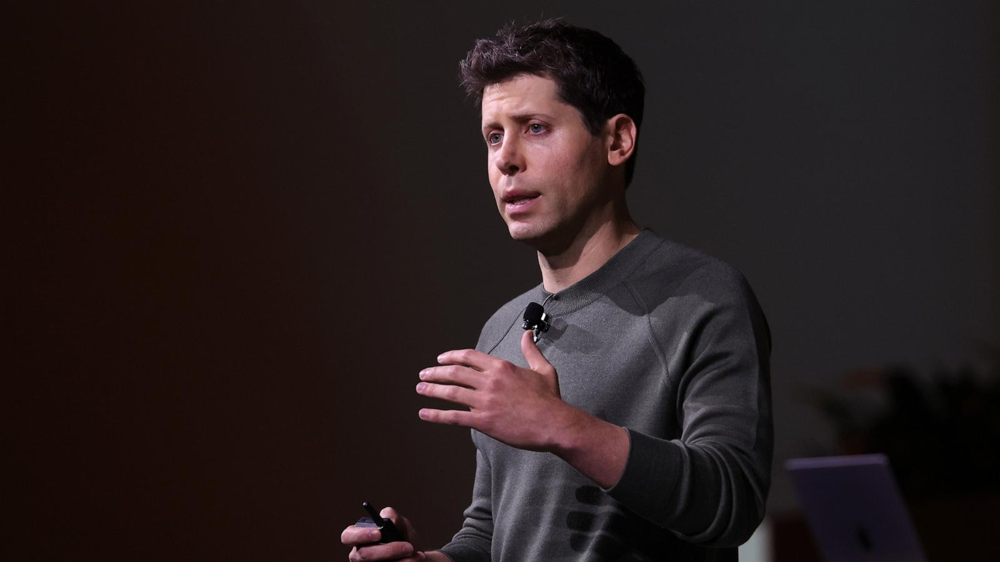
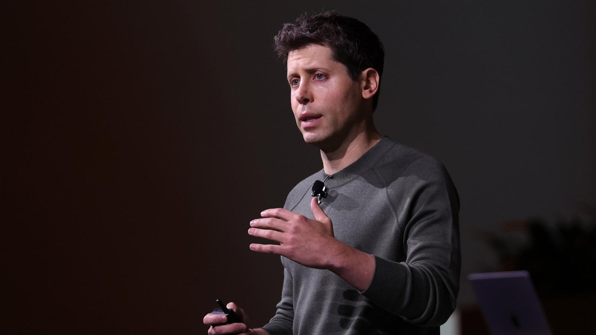

L'intelligence artificielle façonne le monde de demain. Portée par des visionnaires comme Sam Altman, elle repousse les limites de la créativité, de la performance et de l'innovation pour transformer notre quotidien.
 

En 2020, Sam Altman devient le PDG d'OpenAI, une organisation dédiée à la recherche en intelligence artificielle. Sous sa direction, OpenAI se concentre sur le développement de modèles d'IA avancés et accessibles, visant à démocratiser l'accès à cette technologie. Altman met l'accent sur la sécurité et l'éthique de l'IA, tout en encourageant l'innovation rapide. Cette période marque le passage de l'IA expérimentale à une technologie accessible et grand public.
En 2022, OpenAI lance GPT-3, un modèle de langage révolutionnaire capable de générer du texte cohérent et contextuel. GPT-3 attire l'attention mondiale pour ses capacités impressionnantes, ouvrant la voie à une multitude d'applications dans divers domaines, de la rédaction automatisée à la programmation assistée. Cette avancée technologique souligne le potentiel de l'IA à transformer les interactions humaines avec les machines, tout en posant des questions cruciales sur l'éthique et l'impact sociétal de ces technologies.
En 2025, sous la direction de Sam Altman, OpenAI continue d'innover avec le lancement de GPT-5, un modèle d'IA encore plus avancé. GPT-5 intègre des capacités multimodales, permettant une interaction fluide entre le texte, les images et la vidéo. Cette évolution marque une étape significative dans l'intégration de l'IA dans la vie quotidienne, facilitant des applications allant de l'éducation personnalisée à la création artistique assistée par IA. Altman insiste sur l'importance de réguler l'IA pour garantir qu'elle soit utilisée de manière responsable et bénéfique pour l'humanité.
globalement, depuis les années 2020 le monde n'a fait que d'avancer en termes de technologies, depuis le lancement de chatgpt en 2020, les IA n'ont cessé de ce développer au seins du grand public. Hors OpenAI, de nombreux avancés on été fait, les IA sont maintenant capables de réaliser des tâches plus complexes (créations de vidéos, document et autres...etc). Aujourd'hui l'IA est capables de produire des vidéos d'un réalisme déconcertant notamment avec l'arrivé de Sora 2 ou encore Veo 3, mais ce n'est pas tout, elfes sont capables d'assister dans le quotidien avec la création d'agent permettant l'automatisation de tâches. En somme les IA ne font que de se développer et sont loin de s'arrêter !